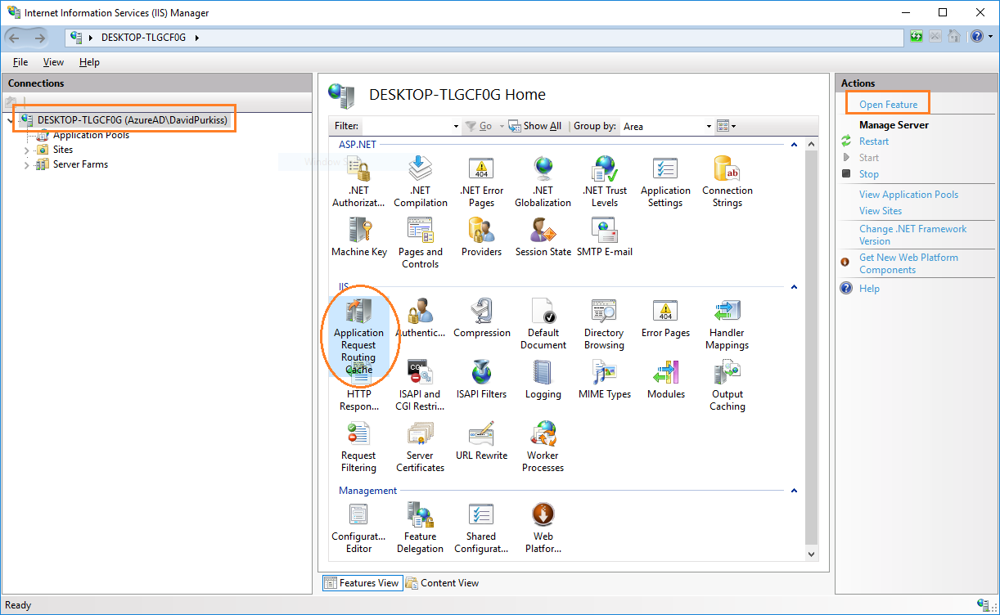
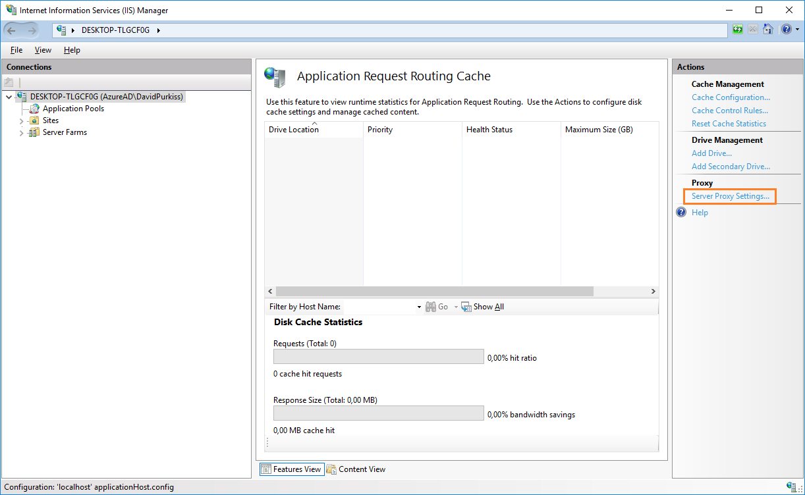

Setup IIS Url Rewrite
OptoOne and Psibyl uses the IIS Url rewrite module to redirect traffic to the web applications on port 80 to their respective self-hosted services on other ports. In order for this to work correctly the following steps must be performed in a new unconfigured Windows machine.
Install Url ReWrite module
Download the URL Rewrite Module 2.0 and isntall.
Install Application Request Routing module
Download the Application Request Routing module and install.
Enable IIS proxy
- Open the IIS Manager and select the highest level root on the left.
- Oprn the 'Application Request Routing Cache' feature on the right.

- Then select 'Server Proxy Settings' in the Actions menu on the right.

- Make sure that the 'Enable proxy' check box is checked.